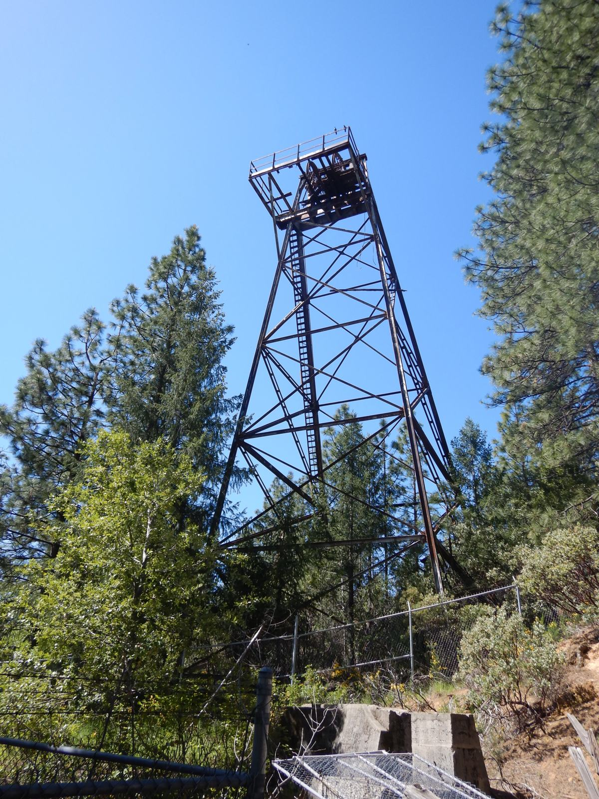

One of California's most productive hard-rock mines
Nestled in the Sierra Nevada foothills near Nevada City, the Lava Cap Gold Mine was one of the most productive hard-rock gold mines in California during the 1930s and 1940s. At its peak, 300 miners worked around the clock, bussed in daily from Nevada City.
Named for the ancient volcanic lava cap that formed the geological conditions for gold deposits, the mine operated through the Great Depression and provided steady work when few other opportunities existed.

A Century Beneath the Mountain
Lava Cap Mine Established
The Lava Cap Mine began active operations in 1861, following the discovery of its quartz vein system around 1860. After an inactive period from 1918 to the early 1930s, the site was reorganized as the Lava Cap Gold Mining Corporation in 1932 and 1933 and became a major hard-rock operation during the Great Depression.
Gold Revaluation Spurs Growth
The Gold Reserve Act raised the official price of gold from $20.67 to $35 per ounce. Previously marginal ore became profitable and the mine expanded rapidly.
Peak Production Years
About 300 miners worked around the clock, bussed in daily from Nevada City, on wages that made Lava Cap a lifeline during the Depression. The operation included a stamp mill, an assay office and worker housing. For every ounce of gold, the mine yielded roughly ten ounces of silver. Silver ranking claim: Misty to source
European Flotation System Installed
A flotation system imported from Europe was installed to improve recovery by separating gold-bearing minerals from crushed ore. Recovery figure: the old site said "300 ounces of gold per ton", which looks like a typo
Infrastructure at Its Height
The complex reached its fullest extent, with multiple shaft levels, a processing plant, a company store and a community of families living on the property.
Wartime Closure
War Production Board Order L-208 shut down non-essential gold mining in the United States. Lava Cap's tungsten production, a critical war material, earned a one-year exemption. When it expired, the tunnels went dark.
Dormant Decades
Attempts to reopen the mine after the war proved economically challenging. The site passed through several owners as the structures weathered.
Historic Recognition
Growing interest in California's mining heritage brought renewed attention. Local historians and preservationists began documenting the site, recognizing it as one of the few largely intact hard-rock gold mining complexes in the state.
A New Chapter Begins
A group of historians, preservationists and community members united to save the mine and turn it into a living historical landmark for all Californians.
A window into the lives of those who built California
Lava Cap is more than a collection of old tunnels and rusting machinery. It is a window into the lives of the immigrants, laborers, engineers and dreamers who left their mark on this land.